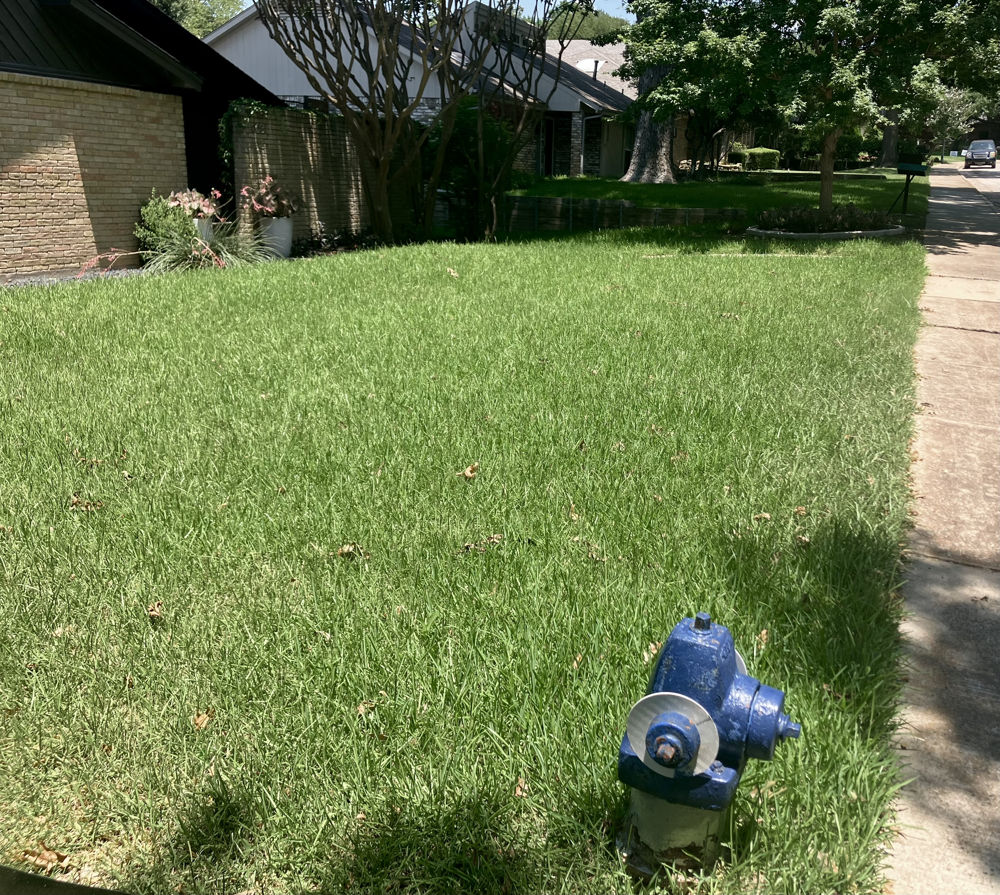

WEEKLY LAWN CARE
Reliable recurring lawn care to keep your yard clean, maintained, and looking its best.
Get a Free EstimateStarting at $25 per visit
Our recurring lawn care service keeps your yard looking clean, maintained, and ready to enjoy.
Consistent mowing on a recurring schedule to keep your lawn maintained and looking its best.
Clean, defined edges along sidewalks, driveways, curbs, and landscape beds for a finished appearance.
We trim around fences, trees, beds, and other areas that your mower cannot easily reach.
Grass clippings and debris are blown from driveways, sidewalks, patios, and other hard surfaces.
Before and after transformations from our lawn care service in Dallas.


We provide recurring lawn care throughout Lake Highlands and surrounding areas of the DFW Metroplex.
Our recurring lawn care service is typically scheduled weekly, depending on the lawn, season, and property needs.
Recurring lawn care includes mowing, edging, string trimming, and blowing of grass clippings and debris from hard surfaces.
Recurring lawn care starts at $25 per visit. Exact pricing depends on the size and layout of the property and the work required.
No. As long as we can access the lawn and any necessary areas of the property, you do not need to be home during service.
Yes. We can provide one-time or short-term lawn care depending on availability. Contact us for a free estimate.